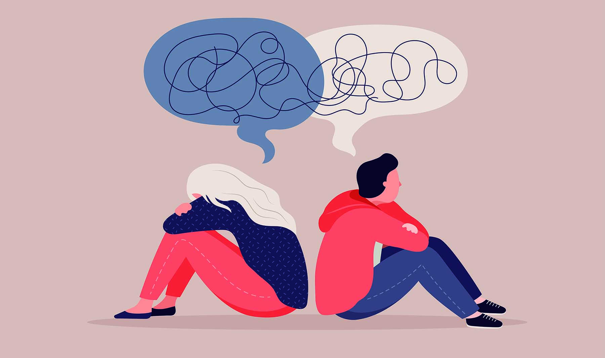

El ciclo cerrado de los jóvenes
Haz clic para saber más
¿Qué situaciones pueden llevar a una persona a pensar en el suicidio?.
En ocasiones, las personas atraviesan por momentos en su vida en los que la carga emocional a la que están sometidas es tan grande que consideran imposible poder abordarla generándoles gran sufrimiento. No son llamadas de atención ni signo de debilidad, egoísmo, cobardía o valentía.El suicidio es una conducta compleja que puede darse por múltiples factores que aumentan la vulnerabilidad.

¿Hablar sobre suicidio es bueno?
Haz clic para saber más
Es bueno hablar sobre la prevención del suicido. Hablar salva vidas porque el suicidio se puede prevenir. El suicidio se ha convertido en la segunda causa de muerte en jóvenes a partir de los 14 años y algunos estudios encuentran tasas entre 15- 20% de adolescentes con ideación suicida acompañada de sentimientos de desesperanza e indefensión.
Conocer, tener información precisa y clara , saber cómo y qué podemos hacer es muy importante y ¿sabes por qué?